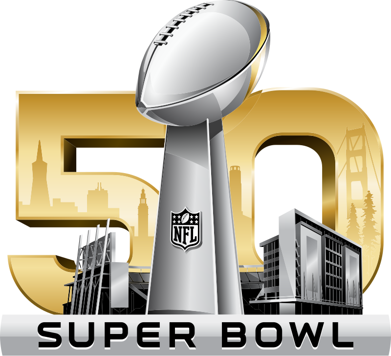

Skittle it the Usual Way, a Rhetorical Analysis
Contents:
Intro
 Many Super Bowls have extravagant advertisements, and skittles is known for having out-there ads. Put these two together and you get a very strange and extravagant advertisement. The ad tries to sow discord over flavors of skittles in order to make the viewer discover their favorite and thus buy skittles. The director Dante Ariola uses mystery and intrigue to take the viewer more into the ad and watch until the end. Skittles is also well known for using shock value in their commercials.
What's the Advertisement About?
The advertisement starts with a scene of an old house surrounded by desert. The scene reminds of the old wild west, quiet, all you can hear is the wind and a bell quietly rung by the wind. Then we see two guys eating from a metal bowl and after a look into the bowl that is almost empty. The two men have a conflict over who will get the last yellow skittle. The first guy picks up the skittle and says “let’s settle this the usual way” then it cuts to a bell being rung and people yelling “settle it the usual way!” (DDB YouTube video) as chaos erupts the silence is broken. You can notice everyone has one very strong arm as they run outside. People abandoning their daily routines to watch. You can see many people surrounding a table with the two that both want the lemon skittle. They take off their over shirts showing their swole arms. As the camera pans around to the crowd, it is emphasized that everyone has a muscular arm as their arm is at the focal points of the camera, everyone women, men, and even the babies, and the dogs have a muscular right arm. The skittle is set on the side of the table and they put their elbows on the table, and lock their hands into an arm wrestle. As the struggle starts they go back and forth, using all their strength against each other, until one of the men is victorious after looking at his favorite skittle sitting there for the taking. He picks up the skittle and shouts in victory, but someone emerges from the crowd and interrupts his victory. She declares that she is left-handed, and her left arm is her beefed up arm. The crowd gives a collective whoa as the camera pans to the winner and his left arm looks like a twig implying he is going to fail and lose his precious yellow skittle. That's when the ad cuts to a sky and rainbow with text: “settle the rainbow, taste the rainbow.” (DDB YouTube video) ending the ad with a call to action to the viewer.
Shocking Skittles
Skittles use a shock tactic to hook the audience into the commercial. The scenes show how people have one strong arm. The strong arms are emphasized at many points of the advertisement keeping the watcher hooked, and having a theme in the ad. Only halfway through the ad does it become clear why one arm is very muscular. The advertisement shows everyone from young as a baby to old as a grandmother having a strong arm, and that can create curiosities in the watcher. Why are their arms like that? Why only one arm? In some watchers it might make the question: is this child friendly? It makes the watcher unable to look away to find out answers. It also has the chaotic approach skittles is known for in their ads. Skittles has been using shock value in their commercials for a long time, and as they have not stopped it seems to work. Plus their unchanging slogan “taste the rainbow” gives them recognizability. Skittles being consistent in their marketing builds a reputation and that can spread by word of mouth. People will talk about how crazy their ads are and just by talking about the brand they get more publicity. Skittles has gotten well acquainted with using shock value and it has become part of their brand. I know If I were to see a not crazy skittles ad I would be more surprised.
Usually Abnormal
The advertisement uses the strangeness of having a “usual way” to settle disputes. Having a usual way seems strange because it means having disputes about wanting a skittle Usuallavor a normal occasion, but at the same time it draws a huge crowd. It also shows how everyone is interested, even leaving their jobs, to go watch the spectacle outside. For it to be a spectacle means your favorite matters and you should have a say in getting the last of the flavor. It pulls attention to how your favorite means something. In this ad it is such an occasion, but it is also normal to have these disputes. This makes the viewer think about the flavors of skittles and which their favorite might be. Even in the comments of the video on youtube a commenter Keenancoates7096 said “Lol as a kid I saw this and it made me love the lemon skittle, still my favorite to this day.” (DDB YouTube video) This ad had a desirable effect on at least this commenter for the company. Having a favorite makes you want that specific one, and because the packs come in varieties of colors it makes the viewer buy more. To add on making having a favorite skittle a common occurrence makes people feel left out if they don’t have one therefore people will enjoy the skittles individually and get more because they know they like that one color best. This is called a bandwagon effect as you don’t want to be the guy left out, you want to be left out and the fear of being left out pushes the viewer to buy. Making more people want to get skittles and thus creating talk about a favorite color furthering the bandwagon.
Lastly, the commercial ends with “settle the rainbow, taste the rainbow.” (DDB YouTube video) It may not be too obvious at first, but it is telling you to settle your own debates and arguments over favorite skittles. It is telling you to get skittles to “taste the rainbow” (DDB YouTube video) which is also their slogan, but saying it engrains in older viewers the slogan further and in newer viewers it starts the slogan and brand affiliation. The slogan is very effective to children, the slogan makes kids wonder what rainbows taste like, and skittles put the question in their head so that's what will answer it. “settle the rainbow” (DDB YouTube video) directly tells the viewer to settle disputes on favorite skittles. Who should get the final skittle? That is to be settled and the ad directly tells the viewer that. It also iterates on the ad as a whole, leading back to when everyone was yelling to “settle it” (DDB YouTube video) coming full circle and repeating the same phrase.
Summary
Skittles uses a few tactics in their commercial to create a desire for their product. Skittles makes the watcher want to get skittles to find their favorite color, using the bandwagon rhetorical device to get more viewers to buy, and having a call to action at the end prompts the viewer to buy. This advertisement is strong and most likely worked very well, leading many people to buy skittles. Being on the superbowl helps as millions of people are watching, some are watching just for the advertisements.